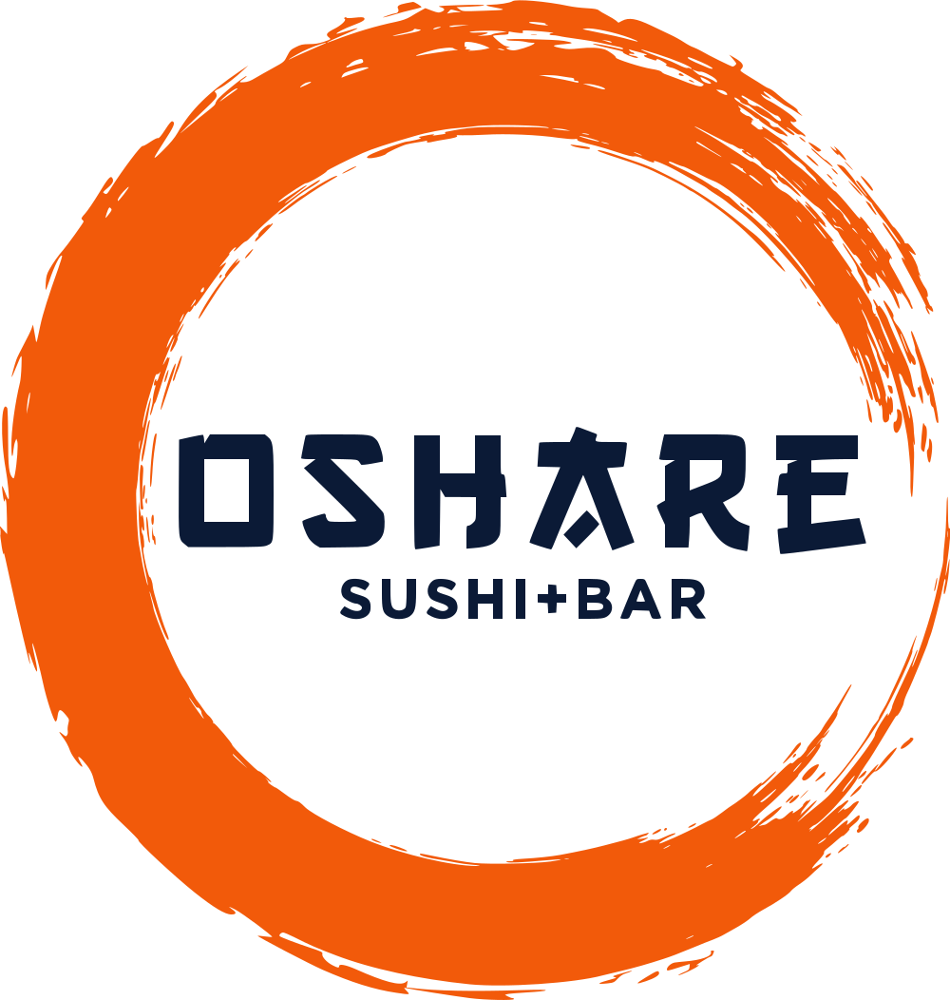

Brand Book Blue & White
A brand system built from what's already on Oshare's tables: cobalt porcelain, the orange brush ring, and a menu that names Lowell.
Discovery
What Oshare is today, sourced. Everything later in this book stands on this chapter.
1.1What we found
Public sources checked on October 8, 2026. Where sources disagree, the restaurant's own site wins.
| Fact | What we found | Source | Status |
|---|---|---|---|
| Name | Oshare Sushi + Bar. Also appears as "Oshare Sushi Bar" and "Oshare Sushi & Bar". | osharesushi.com, OpenTable, Yelp | Verified Standardize |
| Address · phone | 350 Market Street, Lowell, MA 01852 · (978) 677-2636 | osharesushi.com, Toast | Verified |
| Hours | Sun 11:30 AM–9 PM · Mon closed · Tue–Thu 4–9 PM · Fri–Sat 11:30 AM–10 PM | osharesushi.com "All hours"; matches Restaurantji | Verified |
| Chefs | Chefs Bryan and Son, more than 30 years of combined experience. No surnames, bios or founding date published. | osharesushi.com/about | Verified Bios |
| Menu | 124 items across specialty and classic maki, nigiri/sashimi, sets, sushi-bar and kitchen apps, rice plates, noodles, udon, lunch, desserts and sides. Specialty maki $12–22. | Toast online ordering, osharesushi.com/menu | Verified |
| Cuisine | Japanese sushi with Korean-leaning kitchen dishes: bulgogi maki, Kogi beef bowl, spicy beef bao, Santaka noodles. | Menu; OpenTable lists Sushi, Japanese, Korean | Verified |
| Ordering | Toast online ordering, pickup and delivery. Each dish has its own Toast link. Toast gift cards and rewards (1 point per $1) are live. | toast.app ordering page | Verified |
| Third-party delivery | Uber Eats, DoorDash and Grubhub logos appear on Oshare's own promo graphic. Uber Eats store confirmed (4.9, 27 ratings). | osharesushi.com image, Uber Eats | Verified |
| Reservations | No online booking. OpenTable says the restaurant isn't on its network and to call. | OpenTable | Verified |
| Bar | Full bar, cocktails, counter seating. No drinks list published. | OpenTable features and reviews | Verified Drinks list |
| Ratings | Restaurantji 4.8 (68) · OpenTable 4.8 (10) · Uber Eats 4.9 (27) · Yelp 4.3 (6, via Giftly) | Each platform | Verified |
| Review themes | Fish quality, presentation, friendly and attentive staff, cocktails, relaxed room, fair prices. | OpenTable, Restaurantji | Verified |
| Social | Instagram @osharesushibar and facebook.com/OshareSushiBar appear under the name and match #OshareSushiBar on their graphic. Profiles could not be read by our tools. | Search results | Confirm handles |
1.2Conflicts & open questions
Things the public record gets wrong or leaves blank. Each one is on the owner checklist in 5.6.
Hours disagree
OpenTable says daily 11:30–9. Oshare's own site and Restaurantji say Monday closed and weekday dinner only. We used the restaurant's site. OpenTable and any other listings need correcting.
Fix listingsParking
OpenTable says street parking only. Restaurantji and ThreeBestRated mention an adjacent or free lot. The site says "parking nearby" until confirmed.
Confirm with ownerParty of 2 vs. 21
The osharesushi.com menu text reads "Party of 21". Toast shows "Party of 2" at $96. We used Toast.
Confirm with ownerLunch
A lunch menu is published but no lunch hours are. Tue–Thu opens at 4 PM, so lunch likely runs Fri–Sun only.
Confirm with ownerItems without descriptions
Spring Maki, Kaizen Maki, Toro Dragonfruit, Chirashi, Takoyaki, Otoro and others have no description. We left them blank rather than guess.
Confirm with ownerNo room or people
Every published photo is food. There are no images of the dining room, bar, chefs or guests, so the site can't yet show the "+ Bar" half of the name.
Photo shoot1.3Lowell's sushi landscape
Who else a Lowell diner finds when searching for sushi, and where Oshare can stand apart.
| Competitor | Model | What it signals |
|---|---|---|
| Fooddy Goody Sushi & Asian Cuisine | Chinese-Japanese, family-friendly, 101 Lakeview Ave | Value and variety |
| Sugoi Restaurant | Pizza, sushi and burgers; all-you-can-eat; rooftop; 415 Lawrence St | Volume and novelty |
| Fuji Sushi Chinese Bar | Chinese-Japanese combination menu | Convenience |
| China Buffet | Buffet with sushi | Price |
| Koto Lowell | Asian fusion + live music venue, 76 Merrimack St. Now permanently closed. | Leaves a gap for a stylish downtown sushi night out |
Nobody in town owns chef-made sushi with a real bar at neighborhood prices. Oshare already does it. The brand just has to say so.
Sources: Tripadvisor and ThreeBestRated Lowell sushi listings, Koto's own site. We did not measure search volumes; see 5.2 for the keyword plan.
1.4Current identity audit
Keep
The orange ensō. A hand-brushed ring with real energy, and the only distinctive asset Oshare owns. We traced it to vector so it scales cleanly. Verified
The photography. A consistent professional shoot: white-grey marble, 3/4 angles, cobalt blue-and-white porcelain, a red-rimmed lacquer tray and edible flowers. Verified
The menu names. The Acre, Red Sox Maki and the Celtic Roll tie the menu to Lowell. Verified
Replace
The Toast template site. Generic layout with Shrikhand and Inter, yellow buttons that appear nowhere else in the brand, no menu content beyond Toast's list, and no story.
The promo graphic. Black panel with three delivery-app logos above the restaurant's own ordering link. It pushes guests to apps that cost the restaurant commission.
The wordmark's "A". The slashed A reads as a sword cut. We kept it in this proposal because it's theirs, but it leans on the samurai cliché the brief asks us to avoid. Discuss


1.5The word oshare
おしゃれ oshare
stylish, fashionable, dressed up.
In everyday Japanese, oshare describes someone who dresses well or a place with good taste. It is usually written in kana. Verified
We use the idea, not the story. "Dressed-up sushi" in the homepage line is a nod to the meaning that works even if nobody knows the word. We won't present it as the origin of the name until the owners tell us why they chose it. Naming intent
The kana appears here, in this book, only. The brief asks for no decorative Japanese characters on the site, and we agree.
Strategy
Who Oshare is for, what it promises, and how it talks. All of this is our proposal, built on the facts in Part I.
2.1Positioning
For Lowell diners who want sushi that feels like a night out without night-out prices, Oshare is the downtown sushi bar where chef-made maki, Korean-leaning kitchen plates and a full bar arrive dressed up on blue-and-white porcelain.
Recommendation
Versus combo menus
Oshare is chef-run and sushi-first, not a Chinese-Japanese catch-all.
Versus all-you-can-eat
Plated with care, named and composed. Quality over volume.
Versus Boston omakase
Neighborhood prices, no reservations needed, and a menu that speaks Lowell.
2.2Promise & personality
Dressed up, never uptight.
Recommendation The brand promise. Every plate looks like an occasion; every guest feels at home.
| Trait | Means | Not |
|---|---|---|
| Stylish | Considered plating, porcelain, color, a good-looking room | Fussy, exclusive, precious |
| Warm | Staff who explain the menu, regulars remembered | Slick or scripted |
| Local | Rolls named for Lowell, downtown pride | Touristy or generic "Asian" |
| Playful | Firebender, Red Sox Maki, a little wit in the copy | Gimmicky or jokey about the food |
| Precise | Exact prices, real hours, clear raw and spice marks | Cold or clinical |
2.3Audiences & personas
Primary: Lowell locals ordering or walking in. Secondary: planned nights out. Tertiary: visitors to downtown. Personas are illustrative, not research subjects.
Recommendation Validate with owners
The weeknight regular
- Who
- Lives or works near downtown, orders every week or two
- Moment
- 5:15 PM on a phone, already hungry
- Needs
- Is it open? Reorder the usual fast. Pickup time.
- Wins with
- Live open status, one-tap order, dish links
The night out
- Who
- A couple or four friends planning dinner downtown
- Moment
- Two days ahead, on a laptop or in a group chat
- Needs
- The vibe, the bar, prices, whether to call ahead
- Wins with
- Food photography, the +Bar story, clear "call us" policy
The downtown visitor
- Who
- UMass Lowell families, park visitors, event-goers
- Moment
- Searching "sushi near me" on Market Street
- Needs
- Ratings, walkability, lunch on weekends
- Wins with
- Google profile, ratings, directions, lunch section
2.4The guest experience
How it should feel at each step, and what the brand does there.
Recommendation
2.5Mission & vision
Mission
Make any night in Lowell feel a little dressed up, with carefully made sushi, bold kitchen plates and warm service at neighborhood prices.
RecommendationVision
The first place Lowell thinks of for sushi, and the place locals bring visitors to show off downtown.
Recommendation2.6Voice & tone
Warm, direct and specific, with a little wit. Write like a good server talks you through the menu.
Say
Lobster tail tempura, plum sauce, crispy wontons. $19.
Not
An unforgettable fusion of flavors that will tantalize your taste buds.
Say
Open until 9 tonight. Pickup in about 40 minutes.
Not
We look forward to serving you during our operating hours.
Say
Very spicy. The ghost pepper is not a suggestion.
Not
🔥🔥🔥 FIRE ROLL ALERT 🔥🔥🔥
Say
Call us or walk in. We don't take online reservations.
Not
Reservations are currently unavailable at this time.
Name the food
Ingredients and prices do the persuading. Skip adjectives like "delicious" and "authentic".
Talk like Lowell
Market Street, the Acre, game nights. Local, never touristy.
No costume
No faux-Japanese phrasing, no random characters, no "Konnichiwa" greetings.
2.7Story & messaging
Dressed-up sushi on Market Street.
Recommendation Primary line. Alternates: "Dressed up. Never uptight." · "Sushi, dressed for Lowell."
Made with care
Chefs Bryan and Son, 30+ years combined. Nigiri and maki cut to order.
VerifiedTwo counters
A sushi bar and a Korean-leaning kitchen: bulgogi, bao, Santaka noodles.
VerifiedNamed for Lowell
The Acre, Red Sox Maki, the Celtic Roll.
Verified StoriesEasy to get
Order direct for pickup or delivery. Open Tuesday to Sunday.
VerifiedThe short story
Oshare is a neighborhood sushi bar on Market Street in downtown Lowell. Chefs Bryan and Son run a sushi counter and a kitchen side by side, so a night here can be nigiri and a Passion Roll or spicy bulgogi bao and Santaka noodles, with a cocktail from the full bar. Everything arrives on blue-and-white porcelain.
Recommendation2.8Brand principles
Real or labeled
Every fact, price and photo is real, or it is marked for the owners to confirm.
One hot note
Orange appears once per view: the ring, the order button, or one word. Cobalt does the heavy lifting.
The plate is the hero
Photography leads. Type frames it. Nothing decorates over the food.
Order is always one tap
Direct ordering is visible on every page and every screen size.
Lowell, not costume
Identity comes from the tableware, the brush ring and the city, never from borrowed symbols.
Owners can run it
Every component maps to a WordPress block the restaurant can edit.
Identity
The visual system. Every element traces back to an object already on Oshare's tables.
3.1Directions explored
The brief asked for three directions. Each was built from something real in Oshare's world. You chose Blue & White.
Dressed-up sushi on Market Street.
A · Blue & White Selected
- Brief lane
- Contemporary Culinary Editorial
- Source
- Oshare's cobalt sometsuke bowls and the orange brush ring
- Strength
- Food-first, unmistakably theirs, calm enough to last years
- Risk
- Refined directions can drift toward "tasteful restaurant site". The orange ring and full cobalt fields keep it from going quiet.
1 23
23B · Mill City Field Guide
- Brief lane
- Modern Neighborhood Hospitality
- Source
- Lowell National Historical Park's brochure system: black title band, strict grid, numbered stops
- Strength
- Deeply local; the menu becomes a guide to Oshare
- Risk
- Reads institutional; warmth depends entirely on photography
OSHARE
The Acre, $18Shrimp tempura, lobster mix, mango, plum sauce
 ghost pepper satesalmon
ghost pepper satesalmonC · Oshare Magazine
- Brief lane
- Bold Japanese-Fusion Expression
- Source
- "Oshare" means stylish: Japanese street-style magazines, cover lines and outfit callouts for each dish
- Strength
- Loud, fun, very shareable
- Risk
- Tips into gimmick across a whole site; leans on the name's meaning before the owners confirm it
B and C stay on file. One idea from B survives in the chosen system: the menu legend that marks raw and spicy dishes, borrowed from a map key.
3.2Logo system
Oshare's existing mark, traced from their file into clean vectors and organized into a family. The design is theirs; the system is new.
One-color versions
Clear space & minimum sizes
Keep a quarter of the ring's width clear on every side. Nothing else enters that space.
| Primary lockup | 72 px wide · 20 mm print |
| Horizontal | 120 px wide · 30 mm |
| Compact ring | 16 px · 6 mm |
| Wordmark alone | 80 px wide · 22 mm |
Vector files: lockup-color.svg, lockup-reverse.svg, lockup-mask.svg, enso.svg, wordmark.svg. Compare against the original art
Don't
Stretch or squash it.
Recolor the ring. It is always orange, or the single mono color.
Set it on a busy photo without a cobalt or glaze field.
Add shadows, glows or bevels.
Rotate or move the wordmark inside the ring.
Put the color lockup on orange, where the ring disappears.
3.3Color
Two materials and one stroke: porcelain glaze, underglaze cobalt, and the orange ring.
Proportion
Cobalt owns whole sections, never thin accents. Orange stays under 5% of any view.
Accessible pairs
Contrast ratios computed against WCAG 2.2. AA needs 4.5:1 for text, 3:1 for large text and graphics.
Body text
AAA
Text on cobalt fields
AAA
Headings, data
AAA
Links, icons
AA
Primary button label
AA
Small orange text
AA
Orange words on cobalt
AA
+Bar band text (band stays dark in both themes)
AAA
The ring on cobalt (graphic)
Fail
Avoid for text
Large text / graphics only
A night palette ships for visitors whose devices are set to dark mode: ground #0A1630, cobalt fields #15306A, text #EEF2FA, and cobalt used as text or rules lightens to #8FAEEA. The deep band behind +Bar stays dark in both themes. Every text pair is checked in both themes.
3.4Typography
Two faces from Japanese type foundries, both designed with Latin letters. Japanese menus set English this way, which makes the pairing feel at home without a single decorative character.
Display · Shippori Mincho B1
Aa Gg 18
Weights 500, 700, 800. The "B1" cut has softened, ink-pooled corners, like cobalt brushed onto glaze. Headlines, dish names, prices.
Text · Zen Kaku Gothic New
Aa Gg 18
Weights 400, 500, 700. A calm gothic for menus, descriptions and buttons. Both faces are free on Google Fonts.
40–80 px · -0.03em
Dressed-up sushi
32–58 px · -0.02em
Three rolls named for home.
21–27 px
Lobster Rangoon Maki $19
17–21 px · 1.6
Specialty maki, nigiri and a Korean-leaning kitchen from Chefs Bryan and Son.
17 px · 1.65
Lobster tail tempura, avocado, whipped cream cheese, plum sauce, spicy mayo, fried onions, crispy wontons.
12 px caps · +0.12em
Served raw or undercooked
Prices use tabular figures. Headlines balance across lines. Running text stays near 65 characters.
3.5Graphic system
Three devices, all taken from the table.
The rim rule
A heavy line over a hairline, like the painted rim of Oshare's bowls. The only divider in the system. Under section heads, over menus, around packaging.
The ensō frame
The brush ring circles one thing per view: the hero dish, a featured plate on hover, the active menu section. It never becomes a pattern.
Cobalt field
Solid cobalt with a faint grain, like glaze over clay. It holds headlines, the Lowell rolls, hours and the footer.
Deliberately absent: cherry blossoms, waves, fans, kanji, samurai, red-and-black. The bowls' floral borders stay on the bowls.
3.6Icons & marks
One stroke family: 24 px grid, 1.7 px stroke, round caps. Menu marks never rely on color alone.
Served raw or undercooked. Mirrors Toast's asterisk.
Spicy, only where the menu says so.
Very spicy: Firebender, Santaka, ghost pepper.
No vegetarian, vegan or allergen marks until the kitchen confirms them. Dietary marks
3.7Photography
The existing shoot sets the standard. The gap is everything that isn't food.

Shot list for the first shoot Schedule
Rules
Light: daylight or warm tungsten, never colored LEDs.
Props: only Oshare's own tableware, chopsticks and napkins.
Edit: true color. No heavy filters, no added steam.
Crop: leave space on one side for type, especially for social.
Never: stock sushi, AI-generated food, or photos of other restaurants' dishes.
3.8Layout & spacing
A 12-column grid, a 4 px spacing scale, generous space above headings.
12 columns · max width 1320 px · gutter 16–48 px fluid · cobalt sections run full bleed
Split hero
Cobalt copy column (11 parts) against a photo (13 parts). The ring straddles the food.
Plates grid
One wide plate and one narrow, then three across. Never a wall of identical cards.
Menu columns
Two columns of dishes with hairlines, a rim rule under each section head.
3.9UI components
Live components from the website, rendered with the production CSS.
Firebender Maki RAW
$17Spicy tuna mix, salmon, apple, avocado, sweet potato tempura, ghost pepper sate
Japanese Uni RAW
$20Menu item, sold-out state.
Sold out today
3.10Motion
One authored moment: the brush paints its ring. Everything else is quiet.
The brush stroke
The ring is revealed by a sweeping mask that starts at the brush's opening and travels clockwise, 1.7 seconds, easing out fast like a real stroke.
Where: hero load, page headers, hover on featured plates.
Reduced motion: the finished ring appears with no sweep.
Never: spinning, looping, or parallax on food.
Applications
The system at work, from the phone screen to the takeout bag.
4.1Website
Five pages built on this system with real menu data, real photos and live Toast links.
Home: hero, live open status, the Lowell rolls, plates with order links, sushi bar vs kitchen, chefs, +Bar, ratings, visit.
Menu: all 124 dishes as indexable HTML with section nav, search, "no raw fish" and "spicy" filters, and a direct Toast link on every dish.
Our story, Gallery, Visit: verified facts only, with pitch notes marking every gap for the owners.
Pitch notes can be hidden from the footer for a clean presentation.
4.3Printed menu
A two-panel table menu: cobalt cover, dense glaze interior with the rim rule.
11 × 17 in folded to 8.5 × 11. Uncoated bright white stock, cobalt as a spot color (nearest Pantone around 7687 C, match on press). Print proof
4.4Packaging & gift card
White and cobalt so every pickup bag looks like the porcelain.
350 Market St · Lowell
Build plan
How the website gets built, connected to Toast, found on Google, and kept running.
5.1Toast integration
Three levels. We recommend starting at Level 1 at launch and adding Level 2 once Toast access is confirmed.
Branded links Verified
- Every order button goes to Oshare's Toast ordering page, which handles pickup, delivery, payment and rewards.
- Every dish links to its own Toast item page. These links exist today.
- Toast says its ordering page can't be embedded in another site, so we link instead.
- Gift card link to Toast's gift card page.
- Cost: included. Risk: low.
Synced menu Toast access
- Toast's read-only standard API access can return the menu (menus v2) for one location.
- Needs Toast's RMS Essentials plan or higher, and a user with the Manage Integrations permission to create credentials.
- WordPress pulls the menu on a schedule, caches it, maps sections, and flags sold-out items.
- Fallback with no API: owners edit the menu in WordPress, with a monthly check against Toast.
- Cost: development time; Toast's docs list no API fee, confirm with Toast. Risk: low.
Native ordering
- A cart on osharesushi.com that sends orders into Toast.
- Requires a partner or custom integration approved by Toast, with write access to orders and the credit card API.
- Must handle modifiers, price checks, taxes, payments, stock, hours, voids and refunds.
- Toast does not publish pricing or timelines for this access.
- Recommendation: not worth it for one location. Level 1 already gives a branded path to Toast.
Item links open the dish in Toast's ordering page. They don't pre-fill a cart. The links include Toast's item IDs, so the site regenerates them from Toast data and checks them nightly. Sources: Toast Online Ordering FAQ, API overview, standard API access guide and FAQs, ordering integration checklist.
5.2SEO & local search
Real menu content on Oshare's own domain, consistent business facts everywhere, and structured data that tells search engines and AI assistants exactly what Oshare is.
| URL | Title tag | Main intent |
|---|---|---|
| / | Oshare Sushi + Bar | Sushi, Maki & Cocktails on Market Street, Lowell MA | sushi Lowell MA, sushi bar Lowell, best sushi Lowell |
| /menu/ | Menu | Oshare Sushi + Bar, Lowell MA — Specialty Maki, Nigiri, Noodles | sushi takeout Lowell, sashimi Lowell, specific dish names |
| /about/ | Our Story | Oshare Sushi + Bar, Lowell MA | brand and chef searches |
| /visit/ | Hours & Directions | Oshare Sushi + Bar, 350 Market St, Lowell MA | hours, parking, "near me", downtown Lowell sushi |
| /gallery/ | Gallery | Oshare Sushi + Bar, Lowell MA | image search, social sharing |
Structured data
Restaurant (address, hours, cuisine, price range, menu, order action) on every page. Menu with sections, items and prices on /menu/. Breadcrumbs. No review or rating markup: Google doesn't show self-served review stars for local businesses.
VerifiedGoogle Business Profile
Primary category Sushi restaurant, secondary Japanese restaurant and Bar. Hours matching the site. Menu link to /menu/, order link to Toast. Monthly photo uploads from the new shoot.
AccessName consistency
Pick one: "Oshare Sushi + Bar". Fix "Sushi & Bar" and "Sushi Bar" variants and the stale OpenTable hours. Same address and phone format everywhere.
Confirm with ownerAI-ready facts
A plain, factual paragraph on /visit/ with name, address, hours, cuisine, ordering and reservations, plus a short FAQ: parking, reservations, delivery, lunch, raw options.
RecommendationPerformance
AVIF/WebP photos with set sizes, the hero preloaded, fonts subset to Latin, no page builders, full-page caching. Target: all Core Web Vitals green on mobile.
RecommendationContent to add
One post a month: a new roll, the story behind The Acre, a chef profile, game-night specials. Each links to the menu and Toast. No city doorway pages.
RecommendationSeed topics (sushi Lowell MA, best sushi Lowell, sushi takeout and delivery Lowell, Japanese restaurant Lowell, sashimi Lowell) are mapped to intent. We did not pull search volumes; add Search Console data after launch.
5.3WordPress & hosting
A custom block theme on the same managed stack Jeremy runs for his other clients.
Theme
A custom block theme. theme.json carries every token in 5.4, so editors can only pick brand colors and sizes.
Templates: front page, menu, page, gallery, visit, single post.
Patterns: hero, Lowell rolls, plates grid, two counters, chefs, +Bar band, ratings, visit block.
Custom blocks: Order button (site-wide Toast URL), Open status (from the hours setting), Menu (server-rendered from synced data), Dish card.
Data & editing
Settings page (ACF options): hours, phone, Toast order URL, gift card URL, social links. Change once, updates everywhere including schema.
Menu: Level 2 sync from Toast into a cached store. Fallback: Menu Item post type with sections, price, raw and spicy flags, edited by staff.
Hosting: Cloudways on DigitalOcean with server and full-page caching, Cloudflare in front, daily backups, uptime monitoring.
Care plan: monthly updates, menu and hours check against Toast, analytics and Search Console report.
| Phase | Work |
|---|---|
| 1 · Approve | Owner checklist (5.6), photo license, accounts and access |
| 2 · Shoot | Half-day shoot from the shot list in 3.7 |
| 3 · Build | Block theme, patterns, custom blocks, menu data, schema |
| 4 · Connect | Toast links (Level 1), API sync if available (Level 2), Google Business Profile |
| 5 · Launch | Redirects from current Toast site URLs, sitemap, Search Console, listing cleanup |
5.4Design tokens
Copy straight into the theme. These are the values the prototype runs on.
CSS custom properties
:root {
/* color */
--glaze: #F3F5F9; --glaze-2: #E9EDF4; --wash: #D9E3F2;
--ink: #0B1A36; --ink-2: #3E4D6B;
--cobalt: #1F3F80; --cobalt-2: #2E58A6; --on-cobalt: #F3F5F9; --on-cobalt-2: #B9C9EA;
--enso: #F25A0A; --enso-ink: #A83D08; --enso-hi: #FF9A5C; --on-enso: #0B1A36;
--cobalt-ink: #1F3F80; /* cobalt as text, rules and borders; #8FAEEA in dark mode */
--band: #0B1A36; /* deep band; #050B1A in dark mode */
--ok: #17703D; /* positive state; #6FD39B in dark mode */
/* type */
--display: "Shippori Mincho B1", "Yu Mincho", Georgia, serif;
--sans: "Zen Kaku Gothic New", "Yu Gothic", system-ui, sans-serif;
--fs-hero: clamp(2.5rem, 1.5rem + 3.6vw, 5rem);
--fs-h2: clamp(2rem, 1.35rem + 2.4vw, 3.6rem);
--fs-h3: clamp(1.3rem, 1.12rem + .7vw, 1.7rem);
--fs-body: 1.0625rem;
/* space: 4px scale */
--s1: .25rem; --s2: .5rem; --s3: .75rem; --s4: 1rem; --s5: 1.5rem;
--s6: 2rem; --s7: 3rem; --s8: 4rem; --s9: 6rem; --s10: 8rem;
--radius-pill: 999px; --ease: cubic-bezier(.16, 1, .3, 1);
}WordPress theme.json
{
"$schema": "https://schemas.wp.org/trunk/theme.json",
"version": 3,
"settings": {
"color": {
"defaultPalette": false,
"palette": [
{
"slug": "glaze",
"name": "Glaze",
"color": "#F3F5F9"
},
{
"slug": "ink",
"name": "Ink",
"color": "#0B1A36"
},
{
"slug": "cobalt",
"name": "Cobalt",
"color": "#1F3F80"
},
{
"slug": "cobalt-line",
"name": "Cobalt Line",
"color": "#2E58A6"
},
{
"slug": "wash",
"name": "Wash",
"color": "#D9E3F2"
},
{
"slug": "enso",
"name": "Ensō Orange",
"color": "#F25A0A"
},
{
"slug": "enso-ink",
"name": "Orange Ink",
"color": "#A83D08"
},
{
"slug": "enso-light",
"name": "Orange Light",
"color": "#FF9A5C"
}
]
},
"typography": {
"fluid": true,
"fontFamilies": [
{
"slug": "display",
"name": "Shippori Mincho B1",
"fontFamily": "\"Shippori Mincho B1\", Georgia, serif"
},
{
"slug": "sans",
"name": "Zen Kaku Gothic New",
"fontFamily": "\"Zen Kaku Gothic New\", system-ui, sans-serif"
}
],
"fontSizes": [
{
"slug": "h3",
"size": "1.7rem",
"fluid": {
"min": "1.3rem",
"max": "1.7rem"
}
},
{
"slug": "h2",
"size": "3.6rem",
"fluid": {
"min": "2rem",
"max": "3.6rem"
}
},
{
"slug": "hero",
"size": "5rem",
"fluid": {
"min": "2.5rem",
"max": "5rem"
}
}
]
},
"spacing": {
"spacingScale": {
"steps": 0
},
"spacingSizes": [
{
"slug": "1",
"name": "s1",
"size": ".25rem"
},
{
"slug": "2",
"name": "s2",
"size": ".5rem"
},
{
"slug": "3",
"name": "s3",
"size": ".75rem"
},
{
"slug": "4",
"name": "s4",
"size": "1rem"
},
{
"slug": "5",
"name": "s5",
"size": "1.5rem"
},
{
"slug": "6",
"name": "s6",
"size": "2rem"
},
{
"slug": "7",
"name": "s7",
"size": "3rem"
},
{
"slug": "8",
"name": "s8",
"size": "4rem"
},
{
"slug": "9",
"name": "s9",
"size": "6rem"
},
{
"slug": "10",
"name": "s10",
"size": "8rem"
}
]
},
"layout": {
"contentSize": "760px",
"wideSize": "1320px"
}
},
"styles": {
"color": {
"background": "var(--wp--preset--color--glaze)",
"text": "var(--wp--preset--color--ink)"
},
"typography": {
"fontFamily": "var(--wp--preset--font-family--sans)",
"lineHeight": "1.65"
},
"elements": {
"heading": {
"typography": {
"fontFamily": "var(--wp--preset--font-family--display)",
"fontWeight": "700",
"lineHeight": "1.08"
}
},
"button": {
"color": {
"background": "var(--wp--preset--color--enso)",
"text": "var(--wp--preset--color--ink)"
},
"border": {
"radius": "999px"
},
"typography": {
"fontWeight": "700"
}
}
}
}
}5.5Asset inventory
Everything the prototype uses, where it came from, and what's still missing.
| Preview | Asset | Source | Rights |
|---|---|---|---|
 | Logo, traced to vector (ring + wordmark) | Logotransparency.png on Oshare's Toast site | Originals |
| Overhead table on dark wood (hero) | Toast Sites CDN · OshareSushiBar4.png, cropped to remove logo panel | License |
 | Overhead table on marble | Toast Sites CDN · OshareSushiBar_hero_2880x2304 | License |
| Nigiri Deluxe in lacquer tray | Toast Sites CDN · OshareSushiBar_MiginDeluxe_2880x2304 | License |
| Stir-fried noodles, porcelain bowl | Toast menu item image (About page) | License |
| Lobster Rangoon Maki | Toast online ordering menu item photo, 720px | License |
| Firebender Maki | Toast online ordering menu item photo, 720px | License |
| Tuna Crispy Rice | Toast online ordering menu item photo, 720px | License |
| Santaka Beef Noodle | Toast online ordering menu item photo, 720px | License |
 | Fried Chicken Bao | Toast online ordering menu item photo, 720px | License |
 | Chicken Karaage | Toast online ordering menu item photo, 720px | License |
 | Chicken Katsu | Toast online ordering menu item photo, 720px | License |
 | Beef Tataki | Toast online ordering menu item photo, 720px | License |
 | Crab Avocado Salad | Toast online ordering menu item photo, 720px | License |
 | Lemon Butter Salmon | Toast online ordering menu item photo, 720px | License |
 | Spicy Chicken | Toast online ordering menu item photo, 720px | License |
 | Beef Teriyaki | Toast online ordering menu item photo, 720px | License |
 | Spicy Edamame | Toast online ordering menu item photo, 720px | License |
 | Stir-Fried Noodles | Toast online ordering menu item photo, 720px | License |
| Menu text and prices (124 items) | Toast online ordering, captured Oct 8, 2026 | Verified |
Still needed from the owners
5.6Owner approval checklist
Tick items off as they're confirmed. Your ticks are saved in this browser only.
Brand
Facts
Menu
Accounts
Imagery
5.7Sources
- Oshare Sushi + Bar website (home, about, hours) (opens in a new tab)
- Oshare menu on osharesushi.com (opens in a new tab)
- Toast online ordering for Oshare (opens in a new tab)
- OpenTable listing (opens in a new tab)
- Restaurantji listing (opens in a new tab)
- Uber Eats store (opens in a new tab)
- Giftly listing (third-party gift, not official) (opens in a new tab)
- Tripadvisor sushi in Lowell (opens in a new tab)
- ThreeBestRated sushi in Lowell (opens in a new tab)
- Koto Lowell (closed) (opens in a new tab)
- Jisho: おしゃれ (oshare) (opens in a new tab)
- Toast Online Ordering FAQ (opens in a new tab)
- Toast API overview (opens in a new tab)
- Toast standard API access (opens in a new tab)
- Toast standard API access FAQs (opens in a new tab)
- Toast ordering integration checklist (opens in a new tab)
Instagram, Facebook and Yelp pages couldn't be read by our research tools, so nothing in this book is drawn from their content.
4.2Social
Three templates. Real photos, a cobalt band, one orange note.
Dish post · 1080 × 1080
The Acre
Shrimp tempura, lobster mix, avocado, mango, shrimp, plum sauce, sriracha, fried shallots.
$18Type post · named rolls, specials
Open tonight until 9
Tuesday to Sunday on Market Street. Order pickup from the link.
Story · 1080 × 1920
Captions follow the voice in 2.6. Hashtag: #OshareSushiBar. Link in bio goes to the Toast order page, not a delivery app. Handles